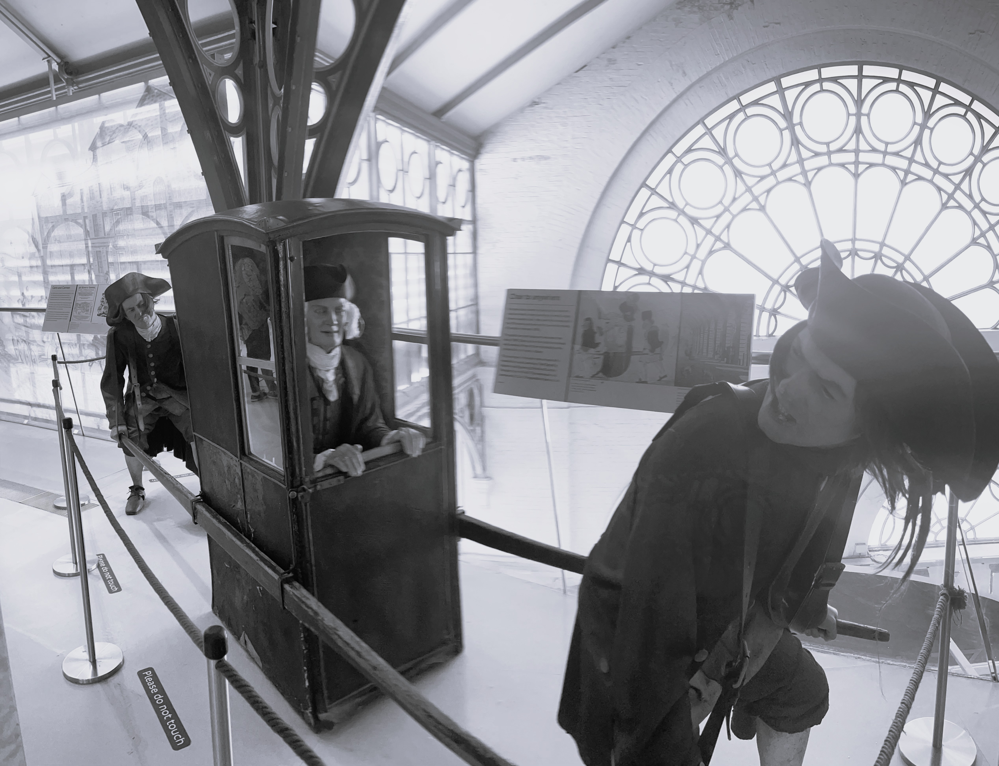
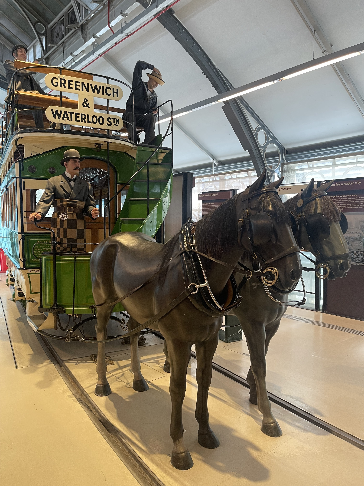
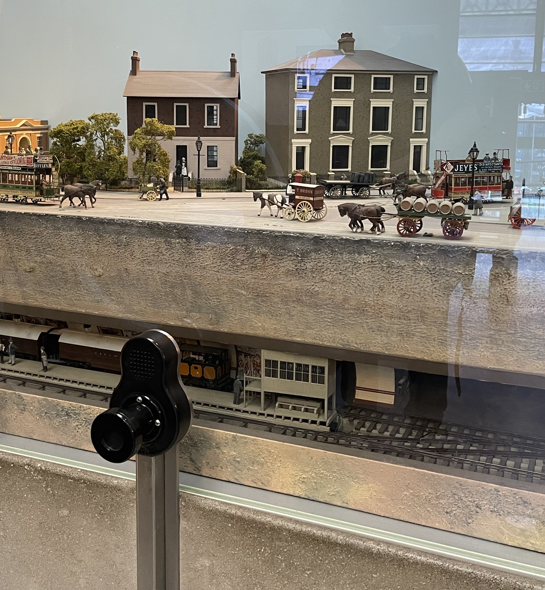
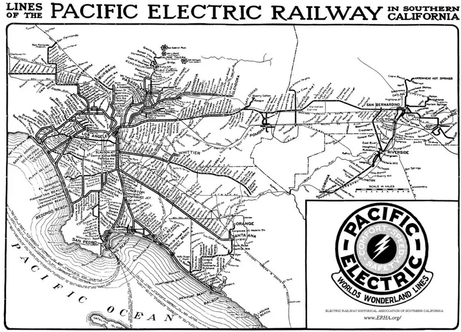
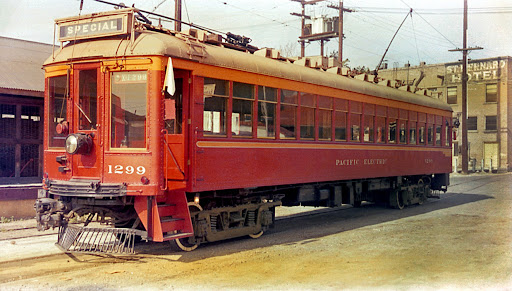
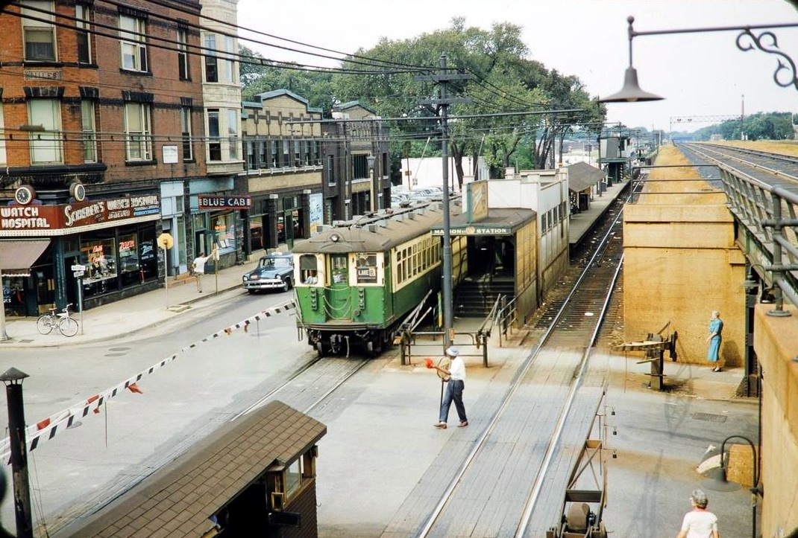

GEO 3/430 Sustainable Urban Transportation
Week #4: Public Transit and the
Efficiencies of Mass Movement

Period 1: Horse-Drawn & Early Fixed-Route Transit (1830s–1880s)
Key Developments
- Horse-drawn omnibuses and street railways introduced fixed routes and regular schedules, marking the first large-scale shift from individual to shared urban mobility.
- The use of steel rails reduced rolling resistance, allowing vehicles to carry more passengers with greater reliability than horse-drawn carriages.
- Early fare systems and standardized routes formalized public transit as a coordinated urban service rather than an informal travel option.
Urban Transportation Relevance
- These systems extended practical travel distances beyond walking, enabling early forms of commuting within expanding industrial cities.
- Development began to concentrate along transit corridors, establishing early patterns of accessibility-based urban growth.
- Fixed-route services introduced the idea of predictable, collective mobility as a core urban function.
Sustainability Significance
- Shared horse-drawn transit improved efficiency relative to individualized carriage travel by moving more people with fewer vehicles.
- The consolidation of trips reduced street congestion and disorder compared to unregulated private transport.
- These systems were ultimately constrained by animal labor, waste management, and limited scalability, highlighting the need for technological transition.





Period 2: Electric Streetcars & Urban Expansion (1890s–1920s)
Key Developments
- The electrification of street railways replaced horse-drawn systems, dramatically increasing speed, capacity, and operational reliability.
- Private transit companies rapidly built extensive streetcar networks, often financed through integrated real estate and land development ventures.
- Technological standardization, including electric traction and fixed rails, enabled frequent, high-volume service across metropolitan areas.
Urban Transportation Relevance
- Electric streetcars made routine commuting possible over longer distances, fundamentally expanding the spatial footprint of cities.
- Urban growth became organized around radial streetcar corridors, giving rise to compact but expanding “streetcar suburbs.”
- Mass transit emerged as the dominant mode of daily urban travel for working- and middle-class populations during this period.
Sustainability Significance
- Streetcar systems moved large numbers of passengers with relatively low per-capita energy use compared to later automobile travel.
- Electrified transit supported dense, walkable urban development that minimized travel distances and infrastructure costs.
- This period demonstrated the scalability of electric mass transit as an efficient alternative to individualized motorized mobility.



